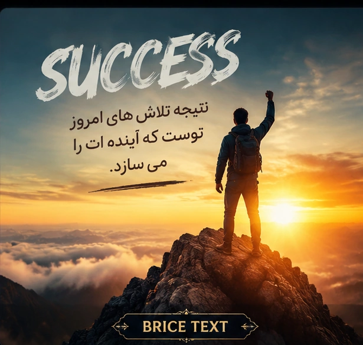

جملات انگیزشی برای تلاش، رشد و رسیدن به هدف

موفقیت یک اتفاق نیست؛ نتیجه تلاشهای کوچک و مداومی است که هر روز انجام میدهی.
هیچ موفقیتی بدون صبر، تلاش و باور به خود ساخته نمیشود.
رویاها زمانی واقعی میشوند که برای رسیدن به آنها قدم برداری.
آدمهای موفق کسانی نیستند که شکست نمیخورند؛ کسانی هستند که دوباره بلند میشوند.
هر قدم کوچک امروز، تو را به موفقیت بزرگ فردا نزدیکتر میکند.
اگر چیزی را واقعاً بخواهی، هیچ سختیای نمیتواند جلوی تلاش تو را بگیرد.
موفقیت از جایی شروع میشود که تصمیم میگیری تسلیم نشوی.
راه موفقیت همیشه آسان نیست، اما ارزش رسیدن به آن را دارد.
موفقیت یک اتفاق نیست؛ نتیجه تلاشهای کوچک و مداومی است که هر روز انجام میدهی.
هیچ رویایی بزرگتر از ارادهای نیست که برای رسیدن به آن تلاش میکند.
اگر امروز قدمی کوچک برداری، فردا به چیزی نزدیکتر میشوی که همیشه آرزویش را داشتی.
افراد موفق کسانی نیستند که هیچوقت شکست نمیخورند؛ کسانی هستند که بعد از شکست دوباره شروع میکنند.
به خودت ایمان داشته باش؛ بزرگترین موفقیتها از یک باور کوچک شروع میشوند.
راه موفقیت همیشه آسان نیست، اما ارزش تمام سختیهایی که تحمل میکنی را دارد.
هر روز فرصتی تازه است برای ساختن آیندهای که میخواهی.
کسی که برای هدفش تلاش کند، دیر یا زود نتیجه تلاشهایش را خواهد دید.
موفقیت یعنی تبدیل کردن غیرممکنها به ممکن با تلاش و پشتکار.
بزرگترین رقیب تو، نسخه دیروز خودت است. امروز بهتر از دیروز باش.
هیچ مسیر بزرگی بدون قدم اول شروع نشده است.
اشتباه کردن پایان راه نیست؛ بخشی از مسیر یادگیری و رشد است.
موفقیت زمانی شروع میشود که تصمیم بگیری تسلیم نشوی.
آینده متعلق به کسانی است که امروز برای ساختنش تلاش میکنند.
هر موفقیتی داستانی از صبر، تلاش و امید پشت خودش دارد.
با قدمهای کوچک هم میتوان به قلههای بزرگ رسید.
باور کن که میتوانی؛ همین باور اولین قدم موفقیت است.
هیچ موفقیتی بدون تلاش واقعی به دست نمیآید.
وقتی هدفی داری، هر روز یک فرصت تازه برای نزدیکتر شدن به آن است.
قوی بمان، ادامه بده و اجازه نده سختیها رویایت را از تو بگیرند.
موفقیت زمانی زیباتر میشود که بدانی برای رسیدن به آن از هیچ تلاشی دریغ نکردهای.
هیچکس با ایستادن در جای خود به مقصد نمیرسد؛ حرکت کن و مسیرت را بساز.
هر شکست یک درس است و هر درس یک قدم به سمت موفقیت بزرگتر.
رویایت را جدی بگیر، زیرا کسی که برای رویاهایش تلاش میکند روزی به آنها میرسد.
موفقیت واقعی یعنی هر روز نسخه بهتری از خودت بسازی.
صبور باش؛ بعضی از زیباترین موفقیتها زمان میبرند.
افراد بزرگ از مشکلات فرار نمیکنند؛ آنها مشکلات را به فرصت تبدیل میکنند.
آرزوها با فکر کردن ساخته نمیشوند؛ با تلاش کردن به واقعیت تبدیل میشوند.
امروز همان روزی است که میتوانی شروع کنی و آیندهات را تغییر بدهی.
به مسیرت اعتماد کن؛ هر قدم تو را به موفقیت نزدیکتر میکند.